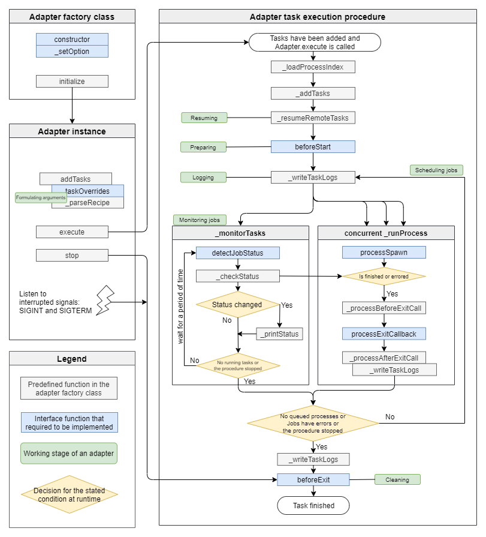

Task Adapter¶
Task Adapter helps to deploy, execute, and monitor tasks on various computing environments.
To execute a Task, the BDP system spawns an Adapter process that handles the user-specified arguments, reads the runtime configurations and parse the Workflow Playbook. Both runtime configuration and Workflow Playbook can be directly defined on the web pages provided by BDP, so the Task can be executed on the fly right after the Task is configured.
The above pre-process is done by the Task Reader of the Adapter process. After the Task Reader, the process knows the correct Adapter and computing resources from the runtime configurations. The process also get the task specifications from the Workflow Playbook. Then, these tasks are ready to deploy.
We provided a base class of the Adapter. To support various computing resources, different Adapters can be implemented from this base class. That is, depending on the used Adapter, jobs are deployed on various computing resources locally or remotely.
Flowchart of an Adapter process¶
The following figure depicts the flow chart of an Adapter.
{kind=link}
After getting the task specifications which are parsed by the Task Reader from the Workflow Playbook,
the Adapter formulates these specifications into job objects by the taskOverrides functions.
Adapter developers can write the command argument recipe in a YAML format, so that the _parseRecipe function can be used to parse the recipe to formulate job commands and the taskOverrides function organizes the task spec including job commands into job objects.
The number of jobs is the number of job objects and the Adapter has a built-in queue to schedule these jobs. There is a concurrency option to control the number of concurrent jobs and the retry option to re-execute those failed jobs.
The Adapter process keeps alive to monitor jobs until all jobs have been successfully finished or a retry limit has been hit.
Interface functions to implement for various computing resources¶
There are 6 interface functions to implement, taskOverrides, beforeStart, processSpawn, detectJobStatus, processExitCallback, and beforeExit.
As mentioned above, we provided a base class of Adapter to extend and implement for all kinds of computing resources. There are several interface functions that need to be implemented.
The above taskOverrides is the first interface function that translates the job objects into the platform specific commands by the customized argument recipe that is parsed by the function _parseRecipe.
Before scheduling these job objects, the beforeStart interface function can be implemented to do the preparations, such as synchronizing files or logging into the computing resources.
Next, the processSpawn and detectJobStatus are the two main interface functions that can be implemented to submit the command and monitor job status, respectively.
After each job is existed successfully or failed, the processExitCallback is called. This function may be implemented to download job logs or update all information for the job.
Lastly, when all jobs are executed either successfully or failed, the interface function beforeExit is called. Adapter developers may implement this function to clear the resources or synchronizing files.
See also
For more information about the Adapter, please see the code document on Github.